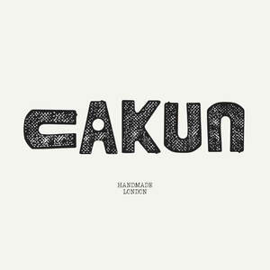
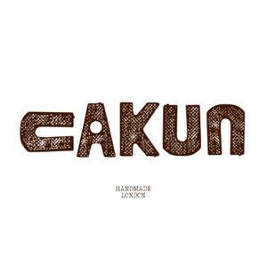

Trade Mark Journal No.2025/052 26 December 2025
UK00004309015 11 December 2025 (18,25)
Mark 1

Mark 2

- Class 18
- Knitted bags; Cross-body bags; Carry-all bags; Hand bags; Leatherboard; Pouchettes; Key-cases; Bridoons; Saddletrees; Tote bags; Duffel bags; Duffle bags; Bags; Grocery tote bags; Drawstring bags; Carry-on bags; Crossbody bags; Sling bags; Diaper bags; Toiletry bags; Duffel bags for travel; Bucket bags; Shoulder bags; Belt bags and hip bags; Luggage bags; Nose bags [feed bags]; Bags (Nose -) [feed bags]; Clutch bags; Kit bags; Carrying bags; Nappy bags; Shoe bags; Belt bags; Messenger bags; Cloth bags; Leather bags; Umbrella bags; Canvas bags; Leather shopping bags; Garment bags; Mesh shopping bags; Mesh bags for shopping; Tool bags of leather, empty; Souvenir bags; Canvas shopping bags; Waterproof bags; Toilet bags; Make-up bags; Makeup bags; Attaché bags; Suit bags; Reusable shopping bags; Bum bags; Bags [envelopes, pouches] of leather, for packaging; Bags [envelopes, pouches] for packaging of leather; Bags [envelopes, pouches] of leather for packaging; Bags for clothes; Baby carrying bags; Gym bags; Leather bags and wallets; Courier bags; Book bags; Overnight bags; Roll bags; Nose bags; Wheeled bags; Tool bags, empty; Shoe bags for travel; String bags for shopping; Travel bags; Bags for travel; Boot bags; Barrel bags; Gladstone bags; Waist bags; Cosmetic bags; Camping bags; Towelling bags; All-purpose carrying bags.
- Class 25
- Headshawls; Over-trousers; Tailleurs; Chemisettes; Mankinis; Neckerchieves; Lumberjackets; Half-boots; Earbands; Wind-jackets; Sweatjackets; Pareus; Babies' outerclothing; Cravates; Rainshoes; Sandal-clogs; Parts of clothing, footwear and headgear; Clothing; Footwear; Knitwear [clothing]; Ready-to-wear clothing; Headbands [clothing]; Headbands for clothing; Headwear; Gloves [clothing]; Gloves as clothing; Woolen clothing; Jerseys [clothing]; Jackets [clothing]; Visors [clothing]; Sneakers [footwear]; Jackets being sports clothing; Clothing for sports; Sports clothing; Footwear [excluding orthopedic footwear]; Leather headwear; Athletic clothing; Gloves for apparel; Clothing for leisure wear; Rainproof clothing; Leather clothing; Clothing of leather; Leather (Clothing of -); Men's clothing; Gabardines [clothing]; Garments for protecting clothing; Oilskins [clothing]; Wristbands [clothing]; Embroidered clothing; Waterproof clothing; Muffs [clothing]; Knitted clothing; Shorts [clothing]; Casual clothing; Bandeaux [clothing]; Denims [clothing]; Corsets [clothing, foundation garments]; Party hats [clothing]; Windproof clothing; Casual footwear; Veils [clothing]; Water-resistant clothing; Aprons [clothing]; Footwear for use in sport; Sports footwear; Footwear for sport; Footwear for sports; Furs [clothing]; Cashmere clothing; Weatherproof clothing; Footwear for snowboarding; Playsuits [clothing]; Golf clothing, other than gloves; Capes (clothing); Footwear for women; Collars [clothing]; Wooden shoes [footwear]; Insoles for footwear; Belts [clothing]; Belts for clothing; Athletic footwear; Layettes [clothing]; Footwear for men; Kerchiefs [clothing]; Leisure clothing; Clothing layettes; Clothing for cycling; Chaps (clothing); Maternity clothing; Shoes for leisurewear; Flip-flops for use as footwear; Hoods [clothing]; Leisure footwear; Boas [clothing]; Dance clothing; Sports clothing [other than golf gloves]; Triathlon clothing; Linen clothing; Latex clothing; Paper hats for use as clothing items; Hats (Paper -) [clothing]; Paper hats [clothing]; Fashion hats; Braces for clothing; Clothing for gymnastics; Woven clothing; Mufflers [clothing]; Bonnets [headwear]; Ready-made clothing; Jackets (Stuff -) [clothing]; Stuff jackets [clothing]; Bottoms [clothing].
Xiyun Lin